411 مكانًا
 متحف وموقع أفروديسياس الأثريآيدن · موقع أثري
متحف وموقع أفروديسياس الأثريآيدن · موقع أثري موقع آني الأثريقارص · موقع أثري
موقع آني الأثريقارص · موقع أثري موقع أرسلان تبه الأثريملطية · موقع أثري
موقع أرسلان تبه الأثريملطية · موقع أثري أكروبوليس برغامومإزمير · موقع أثري
أكروبوليس برغامومإزمير · موقع أثري موقع أسكليبيون برغاموم الأثريإزمير · موقع أثري
موقع أسكليبيون برغاموم الأثريإزمير · موقع أثري البازيليكا الحمراء في برغامةإزمير · موقع أثري
البازيليكا الحمراء في برغامةإزمير · موقع أثري مدينة ديرينكويو تحت الأرضنوشهر · مدينة تحت الأرض
مدينة ديرينكويو تحت الأرضنوشهر · مدينة تحت الأرض أفسسإزمير · موقع أثري
أفسسإزمير · موقع أثري كنيسة النظرنوشهر · مبنى ديني
كنيسة النظرنوشهر · مبنى ديني متحف غورديونأنقرة · متحف
متحف غورديونأنقرة · متحف غوبكلي تبهشانلي أورفا · موقع أثري
غوبكلي تبهشانلي أورفا · موقع أثري متحف غوريمي المفتوحنوشهر · موقع أثري
متحف غوريمي المفتوحنوشهر · موقع أثري حاتوشاجوروم · موقع أثري
حاتوشاجوروم · موقع أثري موقع هيرابوليس الأثري (باموكالي)دنيزلي · موقع أثري
موقع هيرابوليس الأثري (باموكالي)دنيزلي · موقع أثري الكنيسة المظلمة (غوريمي)نوشهر · مبنى ديني
الكنيسة المظلمة (غوريمي)نوشهر · مبنى ديني مدينة قايماقلي تحت الأرضنوشهر · مدينة تحت الأرض
مدينة قايماقلي تحت الأرضنوشهر · مدينة تحت الأرض جبل نمرودأديامان · موقع أثري
جبل نمرودأديامان · موقع أثري طروادةجناق قلعة · موقع أثري
طروادةجناق قلعة · موقع أثري موقع زانثوس الأثريأنطاليا · موقع أثري
موقع زانثوس الأثريأنطاليا · موقع أثري موقع زلفه وباشا باغلارينوشهر · موقع أثري
موقع زلفه وباشا باغلارينوشهر · موقع أثري موقع تشاتال هويوك الأثريقونية · موقع أثري
موقع تشاتال هويوك الأثريقونية · موقع أثري تشافوشين (كنيسة تشافوشين)نوشهر · موقع أثري
تشافوشين (كنيسة تشافوشين)نوشهر · موقع أثري متحف 15 يوليو للديمقراطيةأنقرة · متحف
متحف 15 يوليو للديمقراطيةأنقرة · متحف متحف آدم ميتسكيفيتشإسطنبول · متحف
متحف آدم ميتسكيفيتشإسطنبول · متحف متحف بيت أتاتورك في أضنةأضنة · متحف
متحف بيت أتاتورك في أضنةأضنة · متحف متحف أضنةأضنة · متحف
متحف أضنةأضنة · متحف متحف أديامانأديامان · متحف
متحف أديامانأديامان · متحف متحف أفيون قره حصارأفيون قره حصار · متحف
متحف أفيون قره حصارأفيون قره حصار · متحف موقع أغورا سميرنا الأثريإزمير · موقع أثري
موقع أغورا سميرنا الأثريإزمير · موقع أثري متحف أخلاطبدليس · متحف
متحف أخلاطبدليس · متحف مقبرة أخلاط السلجوقيةبدليس · موقع أثري
مقبرة أخلاط السلجوقيةبدليس · موقع أثري كنيس أهريداإسطنبول · مبنى دينيموقع أيغاي الأثريمانيسا · موقع أثري
كنيس أهريداإسطنبول · مبنى دينيموقع أيغاي الأثريمانيسا · موقع أثري موقع أيزانوي الأثريكوتاهية · موقع أثريمتحف أكدامار التذكاريوان · متحفوادي الأديرة في آق سرايآق سراي · موقع أثري
موقع أيزانوي الأثريكوتاهية · موقع أثريمتحف أكدامار التذكاريوان · متحفوادي الأديرة في آق سرايآق سراي · موقع أثري متحف آق سرايآق سراي · متحف
متحف آق سرايآق سراي · متحف متحف نصر الدين خوجا للآثار والإثنوغرافيا في آق شهرقونية · متحفضريح آق شمس الدينبولو · مبنى ديني
متحف نصر الدين خوجا للآثار والإثنوغرافيا في آق شهرقونية · متحفضريح آق شمس الدينبولو · مبنى ديني موقع ألاباندا الأثريآيدن · موقع أثري
موقع ألاباندا الأثريآيدن · موقع أثري متحف وموقع ألاجا هويوك الأثريجوروم · موقع أثريمتحف بيت علاء الدين ياواشجاكلس · متحف
متحف وموقع ألاجا هويوك الأثريجوروم · موقع أثريمتحف بيت علاء الدين ياواشجاكلس · متحف دير علاهانمرسين · مبنى دينيمتحف بيت أتاتورك في ألانياأنطاليا · متحف
دير علاهانمرسين · مبنى دينيمتحف بيت أتاتورك في ألانياأنطاليا · متحف قلعة ألانياأنطاليا · قلعة ومبنى تاريخي
قلعة ألانياأنطاليا · قلعة ومبنى تاريخي متحف ألانياأنطاليا · متحف
متحف ألانياأنطاليا · متحف موقع آلاشهير الأثري (فيلادلفيا)مانيسا · موقع أثري
موقع آلاشهير الأثري (فيلادلفيا)مانيسا · موقع أثري موقع الإسكندرية ترواس الأثريجناق قلعة · موقع أثري
موقع الإسكندرية ترواس الأثريجناق قلعة · موقع أثري موقع أليندا الأثريآيدن · موقع أثري
موقع أليندا الأثريآيدن · موقع أثري متحف أماسرابارطن · متحف
متحف أماسرابارطن · متحف متحف أماسياأماسيا · متحف
متحف أماسياأماسيا · متحف مقبرة أمينتاس الصخريةموغلا · موقع أثري
مقبرة أمينتاس الصخريةموغلا · موقع أثري متحف حضارات الأناضولأنقرة · متحفمتحف أنامورمرسين · متحف
متحف حضارات الأناضولأنقرة · متحفمتحف أنامورمرسين · متحف موقع أنافارزا الأثريأضنة · موقع أثري
موقع أنافارزا الأثريأضنة · موقع أثري موقع أنيموريوم الأثريمرسين · موقع أثري
موقع أنيموريوم الأثريمرسين · موقع أثري متحف بيت أتاتورك في أنطالياأنطاليا · متحف
متحف بيت أتاتورك في أنطالياأنطاليا · متحف متحف أنطاليا الإثنوغرافيأنطاليا · متحف
متحف أنطاليا الإثنوغرافيأنطاليا · متحف متحف أنطالياأنطاليا · متحفمتحف المقبرة القديمة في أنطالياأنطاليا · متحف
متحف أنطالياأنطاليا · متحفمتحف المقبرة القديمة في أنطالياأنطاليا · متحف مدينة سيدرا القديمةأنطاليا · موقع أثري
مدينة سيدرا القديمةأنطاليا · موقع أثري موقع أنطاكية بيسيديا الأثريإسبرطة · موقع أثري
موقع أنطاكية بيسيديا الأثريإسبرطة · موقع أثري كنيسة أنتيفونيتيسغيرنه (كيرينيا) · مبنى ديني
كنيسة أنتيفونيتيسغيرنه (كيرينيا) · مبنى ديني موقع معبد أبولو سمينثيوسجناق قلعة · موقع أثري
موقع معبد أبولو سمينثيوسجناق قلعة · موقع أثري دير الرسول أندراوسإسكله (تريكومو) · مبنى ديني
دير الرسول أندراوسإسكله (تريكومو) · مبنى ديني موقع أرساميا الأثريأديامان · موقع أثري
موقع أرساميا الأثريأديامان · موقع أثري موقع أريكاندا الأثريأنطاليا · موقع أثري
موقع أريكاندا الأثريأنطاليا · موقع أثري أسبندوسأنطاليا · موقع أثري
أسبندوسأنطاليا · موقع أثري موقع أسوس الأثريجناق قلعة · موقع أثريمتحف بيت أتاتورك في ديار بكرديار بكر · متحفمتحف أتاتورك والإثنوغرافيا في أوشاكعشاق · متحف
موقع أسوس الأثريجناق قلعة · موقع أثريمتحف بيت أتاتورك في ديار بكرديار بكر · متحفمتحف أتاتورك والإثنوغرافيا في أوشاكعشاق · متحف متحف أتاتورك والرديف والإثنوغرافياقوجه ايلي · متحف
متحف أتاتورك والرديف والإثنوغرافياقوجه ايلي · متحف متحف أطلس 1948 للسينما في إسطنبولإسطنبول · متحف
متحف أطلس 1948 للسينما في إسطنبولإسطنبول · متحف متحف قصر كشك الصيدقوجه ايلي · متحف
متحف قصر كشك الصيدقوجه ايلي · متحف كنيسة آيا إيرينيإسطنبول · مبنى ديني
كنيسة آيا إيرينيإسطنبول · مبنى ديني متحف آيا صوفيا للتاريخ والتجربةإسطنبول · متحف
متحف آيا صوفيا للتاريخ والتجربةإسطنبول · متحف جامع آيا صوفيا الكبيرإسطنبول · مبنى ديني
جامع آيا صوفيا الكبيرإسطنبول · مبنى ديني موقع بازيليكا القديس يوحنا (أياسولوك)إزمير · موقع أثري
موقع بازيليكا القديس يوحنا (أياسولوك)إزمير · موقع أثري قلعة أياسولوكإزمير · قلعة ومبنى تاريخي
قلعة أياسولوكإزمير · قلعة ومبنى تاريخي متحف آيدن الأثريآيدن · متحفبازيليكا آيا ترياسإسكله (تريكومو) · مبنى ديني
متحف آيدن الأثريآيدن · متحفبازيليكا آيا ترياسإسكله (تريكومو) · مبنى ديني متحف القديس نيقولاوس التذكاريأنطاليا · متحفمدينة القديس مركوريوس تحت الأرضآق سراي · مدينة تحت الأرض
متحف القديس نيقولاوس التذكاريأنطاليا · متحفمدينة القديس مركوريوس تحت الأرضآق سراي · مدينة تحت الأرض متحف عاشق ويسلسيواس · متحف
متحف عاشق ويسلسيواس · متحف تل آشيقليآق سراي · موقع أثريمتحف بافراسامسون · متحف
تل آشيقليآق سراي · موقع أثريمتحف بافراسامسون · متحف بركة إبراهيم (بالِقلي غول)شانلي أورفا · مبنى ديني
بركة إبراهيم (بالِقلي غول)شانلي أورفا · مبنى ديني متحف بانديرماباليكسير · متحف
متحف بانديرماباليكسير · متحف متحف مقر الجبهة الغربيةقونية · متحف
متحف مقر الجبهة الغربيةقونية · متحف متحف باكسي في بايبورتبايبورت · متحف
متحف باكسي في بايبورتبايبورت · متحف دير بيلاپايسغيرنه (كيرينيا) · مبنى ديني
دير بيلاپايسغيرنه (كيرينيا) · مبنى ديني متحف برغامةإزمير · متحفمتحف بيش قوناقلار الإثنوغرافي والبيت الملطي التقليديملطية · متحفمتحف بيله جكبيله جك · متحف
متحف برغامةإزمير · متحفمتحف بيش قوناقلار الإثنوغرافي والبيت الملطي التقليديملطية · متحفمتحف بيله جكبيله جك · متحف قصر تشاكير آغا في بيرغيإزمير · متحفمتحف بدليس الإثنوغرافيبدليس · متحف
قصر تشاكير آغا في بيرغيإزمير · متحفمتحف بدليس الإثنوغرافيبدليس · متحف موقع بلاوندوس الأثريعشاق · موقع أثري
موقع بلاوندوس الأثريعشاق · موقع أثري مسرح بودروم القديمموغلا · موقع أثريقاعة حطام الزجاج في سرجه ليماني ببودرومموغلا · متحف
مسرح بودروم القديمموغلا · موقع أثريقاعة حطام الزجاج في سرجه ليماني ببودرومموغلا · متحف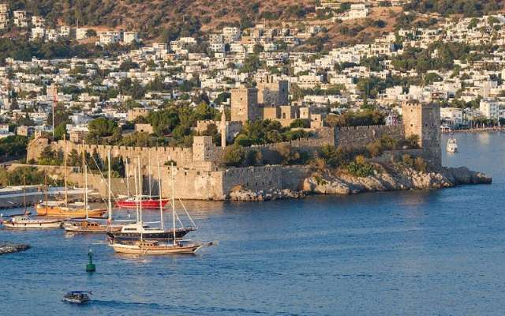
متحف بودروم لآثار ما تحت الماءموغلا · متحف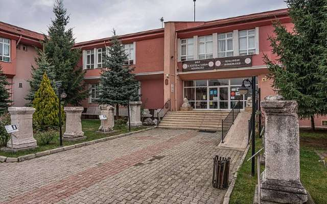
متحف بولوبولو · متحف متحف بوغاز كويجوروم · متحف
متحف بوغاز كويجوروم · متحف قلعة بوفافنتوغيرنه (كيرينيا) · قلعة ومبنى تاريخي
قلعة بوفافنتوغيرنه (كيرينيا) · قلعة ومبنى تاريخي كنيسة القديس استفانوس البلغارية (الكنيسة الحديدية)إسطنبول · مبنى ديني
كنيسة القديس استفانوس البلغارية (الكنيسة الحديدية)إسطنبول · مبنى ديني متحف بوردوربوردور · متحف
متحف بوردوربوردور · متحف متحف بورصة الأثريبورصة · متحف
متحف بورصة الأثريبورصة · متحف متحف بيت أتاتورك في بورصةبورصة · متحف
متحف بيت أتاتورك في بورصةبورصة · متحف متحف الآثار التركية والإسلامية في بورصةبورصة · متحف
متحف الآثار التركية والإسلامية في بورصةبورصة · متحف الجامع الكبير في بورصةبورصة · مبنى ديني
الجامع الكبير في بورصةبورصة · مبنى ديني الجامع الأخضر والضريح الأخضر في بورصةبورصة · مبنى دينيبازيليكا بحيرة إزنيكبورصة · مبنى ديني
الجامع الأخضر والضريح الأخضر في بورصةبورصة · مبنى دينيبازيليكا بحيرة إزنيكبورصة · مبنى ديني الخان الكبيرليفكوشا (نيقوسيا) · قلعة ومبنى تاريخي
الخان الكبيرليفكوشا (نيقوسيا) · قلعة ومبنى تاريخي متحف فسيفساء القصر الكبيرإسطنبول · متحف
متحف فسيفساء القصر الكبيرإسطنبول · متحف متحف بيت جاهد صدقي ترانجي الإثنوغرافيديار بكر · متحفكهوف جهنم آغزيزونغولداق · موقع طبيعي
متحف بيت جاهد صدقي ترانجي الإثنوغرافيديار بكر · متحفكهوف جهنم آغزيزونغولداق · موقع طبيعي متحف الجمهوريةأنقرة · متحف
متحف الجمهوريةأنقرة · متحف موقع دارا الأثريماردين · موقع أثري
موقع دارا الأثريماردين · موقع أثري متحف أتاتورك والإثنوغرافيا في دنيزليدنيزلي · متحف
متحف أتاتورك والإثنوغرافيا في دنيزليدنيزلي · متحف متحف مدينة دنيزليدنيزلي · متحف
متحف مدينة دنيزليدنيزلي · متحف موقع تريبوليس الأثريدنيزلي · موقع أثري
موقع تريبوليس الأثريدنيزلي · موقع أثري قصر درويش باشاليفكوشا (نيقوسيا) · متحف
قصر درويش باشاليفكوشا (نيقوسيا) · متحف دير الزعفرانماردين · مبنى ديني
دير الزعفرانماردين · مبنى ديني معبد أبولو في ديديمآيدن · موقع أثري
معبد أبولو في ديديمآيدن · موقع أثري الجامع الكبير ودار الشفاء في ديفريغيسيواس · مبنى ديني
الجامع الكبير ودار الشفاء في ديفريغيسيواس · مبنى ديني متحف ديار بكر الأثريديار بكر · متحف
متحف ديار بكر الأثريديار بكر · متحف الجامع الكبير في ديار بكرديار بكر · مبنى ديني
الجامع الكبير في ديار بكرديار بكر · مبنى ديني قصر دولمه بهتشهإسطنبول · قلعة ومبنى تاريخيمتحف التاريخ الطبيعيبوردور · متحف
قصر دولمه بهتشهإسطنبول · قلعة ومبنى تاريخيمتحف التاريخ الطبيعيبوردور · متحف كنيس أدرنة الكبيرأدرنة · مبنى دينيمتحف تاريخ البلقان في تحصين خضرلكأدرنة · متحف
كنيس أدرنة الكبيرأدرنة · مبنى دينيمتحف تاريخ البلقان في تحصين خضرلكأدرنة · متحف البرج المقدوني في أدرنةأدرنة · قلعة ومبنى تاريخي
البرج المقدوني في أدرنةأدرنة · قلعة ومبنى تاريخي متحف أدرنةأدرنة · متحف
متحف أدرنةأدرنة · متحف جامع السليمية في أدرنةأدرنة · مبنى دينيمتحف تجربة أفسسإزمير · متحف
جامع السليمية في أدرنةأدرنة · مبنى دينيمتحف تجربة أفسسإزمير · متحف متحف أفسسإزمير · متحف
متحف أفسسإزمير · متحف بيوت المنحدر في أفسسإزمير · موقع أثريمتحف إلازيغإلازيغ · متحفمتحف مدينة البستانقهرمان مرعش · متحفمتحف إلماليأنطاليا · متحف
بيوت المنحدر في أفسسإزمير · موقع أثريمتحف إلازيغإلازيغ · متحفمتحف مدينة البستانقهرمان مرعش · متحفمتحف إلماليأنطاليا · متحف موقع إنكومي (ألاسيا) الأثريغازي ماغوسا (فاماغوستا) · موقع أثريمتحف أرغليقونية · متحفمتحف أحمد كلش أوغلو للآثار والإثنوغرافيا في أرمناككرمان · متحف
موقع إنكومي (ألاسيا) الأثريغازي ماغوسا (فاماغوستا) · موقع أثريمتحف أرغليقونية · متحفمتحف أحمد كلش أوغلو للآثار والإثنوغرافيا في أرمناككرمان · متحف متحف أرزنجانأرزنجان · متحف
متحف أرزنجانأرزنجان · متحف متحف بيت أتاتورك في أرضرومأرضروم · متحف
متحف بيت أتاتورك في أرضرومأرضروم · متحف قلعة أرضرومأرضروم · قلعة ومبنى تاريخي
قلعة أرضرومأرضروم · قلعة ومبنى تاريخي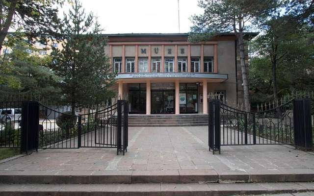
متحف أرضرومأرضروم · متحفمتحف الرسم والنحت في أرضرومأرضروم · متحف متحف إيتي الأثريإسكي شهر · متحف
متحف إيتي الأثريإسكي شهر · متحف المتحف الإثنوغرافيأنقرة · متحف
المتحف الإثنوغرافيأنقرة · متحف جامع أبي أيوب الأنصاريإسطنبول · مبنى دينيالبطريركية المسكونية وكنيسة القديس جاورجيوسإسطنبول · مبنى ديني
جامع أبي أيوب الأنصاريإسطنبول · مبنى دينيالبطريركية المسكونية وكنيسة القديس جاورجيوسإسطنبول · مبنى ديني جزيرة جميلر في فتحيةموغلا · موقع أثري
جزيرة جميلر في فتحيةموغلا · موقع أثري موقع قايا كوي في فتحيةموغلا · موقع أثري
موقع قايا كوي في فتحيةموغلا · موقع أثري موقع ليتون الأثري في فتحيةموغلا · موقع أثري
موقع ليتون الأثري في فتحيةموغلا · موقع أثري متحف فتحيةإسطنبول · متحفمتحف فتحيةموغلا · متحف
متحف فتحيةإسطنبول · متحفمتحف فتحيةموغلا · متحف موقع بينارا الأثري في فتحيةموغلا · موقع أثري
موقع بينارا الأثري في فتحيةموغلا · موقع أثري موقع تلوس الأثري (فتحية)موغلا · موقع أثريموقع فيليوس (تيوس) الأثريزونغولداق · موقع أثري
موقع تلوس الأثري (فتحية)موغلا · موقع أثريموقع فيليوس (تيوس) الأثريزونغولداق · موقع أثري متحف التكية المولوية في غلطةإسطنبول · متحف
متحف التكية المولوية في غلطةإسطنبول · متحف متحف الغازيسامسون · متحف
متحف الغازيسامسون · متحف متحف غازي عنتاب الأثريغازي عنتاب · متحف
متحف غازي عنتاب الأثريغازي عنتاب · متحف قلعة غازي عنتابغازي عنتاب · قلعة ومبنى تاريخيمنطقة فسيفساء جرمانيكياقهرمان مرعش · موقع أثريمتحف غيرسونغيرسون · متحف
قلعة غازي عنتابغازي عنتاب · قلعة ومبنى تاريخيمنطقة فسيفساء جرمانيكياقهرمان مرعش · موقع أثريمتحف غيرسونغيرسون · متحف قلعة كيرينيا ومتحف حطام السفينةغيرنه (كيرينيا) · قلعة ومبنى تاريخي
قلعة كيرينيا ومتحف حطام السفينةغيرنه (كيرينيا) · قلعة ومبنى تاريخي متحف الأيقونات في كيرينياغيرنه (كيرينيا) · متحف
متحف الأيقونات في كيرينياغيرنه (كيرينيا) · متحف قلعة غوزنهمرسين · قلعة ومبنى تاريخي
قلعة غوزنهمرسين · قلعة ومبنى تاريخي كنيسة القديس يوحنا في غولشهيرنوشهر · مبنى دينيمتحف غوموشهانهغوموشهانه · متحف
كنيسة القديس يوحنا في غولشهيرنوشهر · مبنى دينيمتحف غوموشهانهغوموشهانه · متحف دير غوموشلر ومدينته تحت الأرضنيغدة · مدينة تحت الأرض
دير غوموشلر ومدينته تحت الأرضنيغدة · مدينة تحت الأرض متحف قصر غوبغوب أوغلو الإثنوغرافيقيصري · متحف
متحف قصر غوبغوب أوغلو الإثنوغرافيقيصري · متحف متحف غوزليورت للآثار والتاريخ الطبيعيغوزليورت (مورفو) · متحف
متحف غوزليورت للآثار والتاريخ الطبيعيغوزليورت (مورفو) · متحف متحف حاجي بكتاشنوشهر · متحفموقع هادريانوبوليس الأثريكارابوك · موقع أثري
متحف حاجي بكتاشنوشهر · متحفموقع هادريانوبوليس الأثريكارابوك · موقع أثري متحف ذاكرة 15 يوليوإسطنبول · متحف
متحف ذاكرة 15 يوليوإسطنبول · متحف متحف فسيفساء حلبي باغجهشانلي أورفا · متحفتحصين الحميدية ومتحف تاريخ معارك جناق قلعةجناق قلعة · متحف
متحف فسيفساء حلبي باغجهشانلي أورفا · متحفتحصين الحميدية ومتحف تاريخ معارك جناق قلعةجناق قلعة · متحف قلعة خربوطإلازيغ · قلعة ومبنى تاريخي
قلعة خربوطإلازيغ · قلعة ومبنى تاريخي موقع حران الأثريشانلي أورفا · موقع أثري
موقع حران الأثريشانلي أورفا · موقع أثري متحف وموقع حصن كيفا الأثريباطمان · موقع أثري
متحف وموقع حصن كيفا الأثريباطمان · موقع أثري متحف هاتاي الأثريهاتاي · متحفمتحف نجمي أصفور أوغلو الأثري في هاتايهاتاي · متحف
متحف هاتاي الأثريهاتاي · متحفمتحف نجمي أصفور أوغلو الأثري في هاتايهاتاي · متحف قصر هازيرانلارأماسيا · متحف
قصر هازيرانلارأماسيا · متحف متحف هيرابوليس الأثري (باموكالي)دنيزلي · متحف
متحف هيرابوليس الأثري (باموكالي)دنيزلي · متحف قلعة خوشابوان · قلعة ومبنى تاريخي
قلعة خوشابوان · قلعة ومبنى تاريخي موقع ياسوس الأثريموغلا · موقع أثري
موقع ياسوس الأثريموغلا · موقع أثري وادي إهلاراآق سراي · موقع أثري
وادي إهلاراآق سراي · موقع أثري متحف إسبرطةإسبرطة · متحفموقع قادي قلعة الأثريآيدن · موقع أثريمتحف شهداء 15 يوليو والديمقراطية في قهرمان قازانأنقرة · متحف
متحف إسبرطةإسبرطة · متحفموقع قادي قلعة الأثريآيدن · موقع أثريمتحف شهداء 15 يوليو والديمقراطية في قهرمان قازانأنقرة · متحف متحف قهرمان مرعشقهرمان مرعش · متحف
متحف قهرمان مرعشقهرمان مرعش · متحف قلعة يني قلعة في كاهتاأديامان · موقع أثري
قلعة يني قلعة في كاهتاأديامان · موقع أثري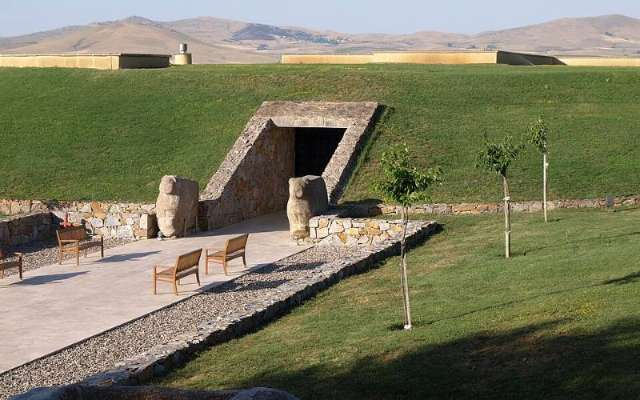
متحف قامان قلعة هويوك الأثريقير شهر · موقع أثري موقع قانلي ديوانه الأثريمرسين · موقع أثري
موقع قانلي ديوانه الأثريمرسين · موقع أثري قلعة كانتاراإسكله (تريكومو) · قلعة ومبنى تاريخيمتحف صفرانبولوكارابوك · متحف
قلعة كانتاراإسكله (تريكومو) · قلعة ومبنى تاريخيمتحف صفرانبولوكارابوك · متحف متحف قره جاسو الإثنوغرافيآيدن · متحف
متحف قره جاسو الإثنوغرافيآيدن · متحف متحف قره دنيز أرغليزونغولداق · متحف
متحف قره دنيز أرغليزونغولداق · متحف موقع قره هان تبه الأثريشانلي أورفا · موقع أثري
موقع قره هان تبه الأثريشانلي أورفا · موقع أثري كهف قره إينأنطاليا · موقع طبيعي
كهف قره إينأنطاليا · موقع طبيعي متحف كرمانكرمان · متحف
متحف كرمانكرمان · متحف متحف قراطاي (متحف البلاط)قونية · متحف
متحف قراطاي (متحف البلاط)قونية · متحف متحف وموقع قره تبه – أصلان طاشعثمانية · موقع أثري
متحف وموقع قره تبه – أصلان طاشعثمانية · موقع أثري جامع كاريه (خورا)إسطنبول · مبنى ديني
جامع كاريه (خورا)إسطنبول · مبنى ديني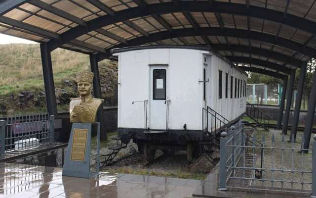
متحف تاريخ حرب جبهة القوقاز في قارصقارص · متحف متحف قارصقارص · متحف
متحف قارصقارص · متحف موقع كاستابالا الأثريعثمانية · موقع أثريمتحف قسطمونيقسطموني · متحف
موقع كاستابالا الأثريعثمانية · موقع أثريمتحف قسطمونيقسطموني · متحف موقع كاونوس الأثريموغلا · موقع أثري
موقع كاونوس الأثريموغلا · موقع أثري متحف قيصري الأثريقيصري · متحف
متحف قيصري الأثريقيصري · متحف متحف بيت أتاتورك في قيصريقيصري · متحف
متحف بيت أتاتورك في قيصريقيصري · متحف مدينة صولو مغارة تحت الأرض في كسكينقيريق قلعة · مدينة تحت الأرض
مدينة صولو مغارة تحت الأرض في كسكينقيريق قلعة · مدينة تحت الأرض موقع كيبيرا الأثريبوردور · موقع أثريمتحف كلسكلس · متحف
موقع كيبيرا الأثريبوردور · موقع أثريمتحف كلسكلس · متحف متحف قلعة كليت بحرجناق قلعة · متحف
متحف قلعة كليت بحرجناق قلعة · متحف موقع كلاروس الأثريإزمير · موقع أثريموقع كلازوميناي الأثريإزمير · موقع أثريمتحف قوجه ايلي الأثريقوجه ايلي · متحف
موقع كلاروس الأثريإزمير · موقع أثريموقع كلازوميناي الأثريإزمير · موقع أثريمتحف قوجه ايلي الأثريقوجه ايلي · متحف متحف قونور ألبدوزجه · متحف
متحف قونور ألبدوزجه · متحف متحف قونية الأثريقونية · متحف
متحف قونية الأثريقونية · متحف متحف بيت أتاتورك في قونيةقونية · متحفمتحف قونية الإثنوغرافيقونية · متحف
متحف بيت أتاتورك في قونيةقونية · متحفمتحف قونية الإثنوغرافيقونية · متحف متحف بيت كوشوتكوتاهية · متحفمتحف وموقع المقابر الملكيةغازي ماغوسا (فاماغوستا) · موقع أثريمتحف حرب الاستقلالأنقرة · متحف
متحف بيت كوشوتكوتاهية · متحفمتحف وموقع المقابر الملكيةغازي ماغوسا (فاماغوستا) · موقع أثريمتحف حرب الاستقلالأنقرة · متحف متحف كوروكوبرو التذكاري وبيت أضنة التقليديأضنة · متحف
متحف كوروكوبرو التذكاري وبيت أضنة التقليديأضنة · متحف متحف القوات الوطنيةباليكسير · متحف
متحف القوات الوطنيةباليكسير · متحف موقع كول تبه الأثريقيصري · موقع أثريمتحف كوتاهيةكوتاهية · متحفكنيسة القديسة حنة (آيفاسيل الصغيرة)طرابزون · مبنى دينيمتحف قرقلر ايليقرقلر ايلي · متحفمتحف قير شهرقير شهر · متحف
موقع كول تبه الأثريقيصري · موقع أثريمتحف كوتاهيةكوتاهية · متحفكنيسة القديسة حنة (آيفاسيل الصغيرة)طرابزون · مبنى دينيمتحف قرقلر ايليقرقلر ايلي · متحفمتحف قير شهرقير شهر · متحف برج الفتاةإسطنبول · قلعة ومبنى تاريخي
برج الفتاةإسطنبول · قلعة ومبنى تاريخي موقع لابراوندا الأثريموغلا · موقع أثري
موقع لابراوندا الأثريموغلا · موقع أثري موقع لاغينا الأثريموغلا · موقع أثري
موقع لاغينا الأثريموغلا · موقع أثري جامع لالا مصطفى باشاغازي ماغوسا (فاماغوستا) · مبنى ديني
جامع لالا مصطفى باشاغازي ماغوسا (فاماغوستا) · مبنى ديني موقع لاودكية الأثريدنيزلي · موقع أثري
موقع لاودكية الأثريدنيزلي · موقع أثري متحف المنحوتات الحجرية (اللابيداري)ليفكوشا (نيقوسيا) · متحفقصر لطيف أوغلوتوقات · متحف
متحف المنحوتات الحجرية (اللابيداري)ليفكوشا (نيقوسيا) · متحفقصر لطيف أوغلوتوقات · متحف متحف الحضارات الليكية وموقع أندرياكي الأثريأنطاليا · موقع أثري
متحف الحضارات الليكية وموقع أندرياكي الأثريأنطاليا · موقع أثري موقع ليميرا الأثريأنطاليا · موقع أثريمتحف قصر لواء باشا الإثنوغرافيقسطموني · متحفمتحف التعدينزونغولداق · متحف
موقع ليميرا الأثريأنطاليا · موقع أثريمتحف قصر لواء باشا الإثنوغرافيقسطموني · متحفمتحف التعدينزونغولداق · متحف موقع ماغنيسيا الأثريآيدن · موقع أثريمتحف بيت أتاتورك التذكاري والإثنوغرافيا في ملطيةملطية · متحف
موقع ماغنيسيا الأثريآيدن · موقع أثريمتحف بيت أتاتورك التذكاري والإثنوغرافيا في ملطيةملطية · متحف متحف ملطيةملطية · متحفمتحف ملازكردموش · متحف
متحف ملطيةملطية · متحفمتحف ملازكردموش · متحف قلعة مامورةمرسين · قلعة ومبنى تاريخي
قلعة مامورةمرسين · قلعة ومبنى تاريخي متحف آق حصار ومقبرة تبه في مانيسامانيسا · موقع أثري
متحف آق حصار ومقبرة تبه في مانيسامانيسا · موقع أثري متحف مانيسامانيسا · متحف
متحف مانيسامانيسا · متحف متحف ماردينماردين · متحفمتحف مرمريسموغلا · متحفمدينة مازي تحت الأرضنوشهر · مدينة تحت الأرض
متحف ماردينماردين · متحفمتحف مرمريسموغلا · متحفمدينة مازي تحت الأرضنوشهر · مدينة تحت الأرض بيت محمد عاكف أرصوي التذكاريإسطنبول · متحفمتحف محمد جابر ألبر الأثريباطمان · متحف
بيت محمد عاكف أرصوي التذكاريإسطنبول · متحفمتحف محمد جابر ألبر الأثريباطمان · متحف متحف بيت أتاتورك في مرسينمرسين · متحف
متحف بيت أتاتورك في مرسينمرسين · متحف قلعة الفتاة في مرسين (قيز قلعة)مرسين · قلعة ومبنى تاريخيمتحف مرسينمرسين · متحفمتحف طرسوسمرسين · متحف
قلعة الفتاة في مرسين (قيز قلعة)مرسين · قلعة ومبنى تاريخيمتحف مرسينمرسين · متحفمتحف طرسوسمرسين · متحف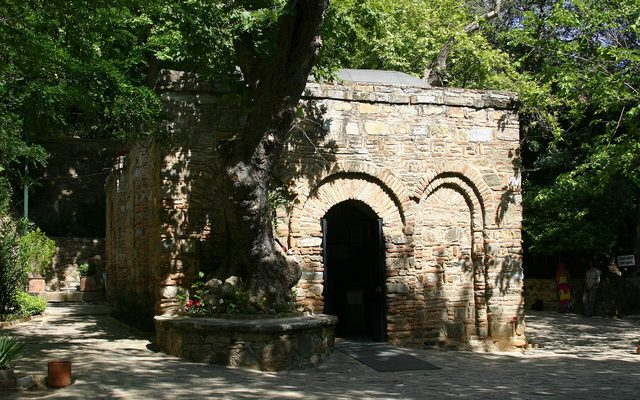
بيت السيدة مريمإزمير · مبنى ديني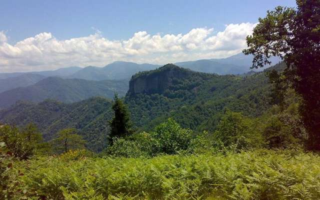
دير السيدة مريمغيرسون · مبنى ديني موقع ميتروبوليس الأثريإزمير · موقع أثري
موقع ميتروبوليس الأثريإزمير · موقع أثري متحف مولاناقونية · متحف
متحف مولاناقونية · متحف متحف التكية المولويةليفكوشا (نيقوسيا) · متحفمتحف التكية المولويةأنطاليا · متحف
متحف التكية المولويةليفكوشا (نيقوسيا) · متحفمتحف التكية المولويةأنطاليا · متحف موقع مدينة ميداس الأثري (يازيلي قايا)إسكي شهر · موقع أثري
موقع مدينة ميداس الأثري (يازيلي قايا)إسكي شهر · موقع أثري قلعة وموقع بيتشين الأثري في ميلاسموغلا · موقع أثري
قلعة وموقع بيتشين الأثري في ميلاسموغلا · موقع أثري موقع يوروموس الأثري في ميلاسموغلا · موقع أثريمتحف الأعمال الحجرية في ميلاسموغلا · متحف
موقع يوروموس الأثري في ميلاسموغلا · موقع أثريمتحف الأعمال الحجرية في ميلاسموغلا · متحف مجمع ضريح أوزونيوفا والمتحف (ميلاس)موغلا · موقع أثريمتحف سوق السمك في ياسوس (ميلاس)موغلا · متحف
مجمع ضريح أوزونيوفا والمتحف (ميلاس)موغلا · موقع أثريمتحف سوق السمك في ياسوس (ميلاس)موغلا · متحف متحف ميليتوسآيدن · متحف
متحف ميليتوسآيدن · متحف موقع ميليتوس الأثريآيدن · موقع أثري
موقع ميليتوس الأثريآيدن · موقع أثري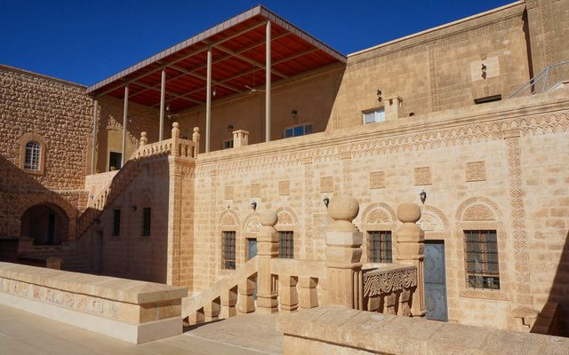
دير مار كبرئيلماردين · مبنى دينيمدينة موجور تحت الأرضقير شهر · مدينة تحت الأرض متحف بيت هدنة مودانيابورصة · متحف
متحف بيت هدنة مودانيابورصة · متحف متحف ضريح موسولوس التذكاري في بودرومموغلا · متحف
متحف ضريح موسولوس التذكاري في بودرومموغلا · متحف موقع كنيدوس الأثريموغلا · موقع أثري
موقع كنيدوس الأثريموغلا · موقع أثري متحف موغلاموغلا · متحفمتحف موشموش · متحف
متحف موغلاموغلا · متحفمتحف موشموش · متحف موقع ميرا الأثريأنطاليا · موقع أثري
موقع ميرا الأثريأنطاليا · موقع أثري متحف تحصين نماز كاهجناق قلعة · متحف
متحف تحصين نماز كاهجناق قلعة · متحف زنزانة ومتحف نامق كمالغازي ماغوسا (فاماغوستا) · متحف
زنزانة ومتحف نامق كمالغازي ماغوسا (فاماغوستا) · متحف متحف بيت نجمي إيغه الإثنوغرافيأدرنة · متحفمتحف حاجي بكتاش للآثار والإثنوغرافيانوشهر · متحفبيت أتاتورك المتحف في حاجي بكتاشنوشهر · متحف
متحف بيت نجمي إيغه الإثنوغرافيأدرنة · متحفمتحف حاجي بكتاش للآثار والإثنوغرافيانوشهر · متحفبيت أتاتورك المتحف في حاجي بكتاشنوشهر · متحف متحف نوشهيرنوشهر · متحفعمارة نيلوفر خاتون (متحف الآثار التركية والإسلامية)بورصة · متحفموقع أنداوال الأثري (نيغده)نيغدة · موقع أثريمتحف نيغدهنيغدة · متحف
متحف نوشهيرنوشهر · متحفعمارة نيلوفر خاتون (متحف الآثار التركية والإسلامية)بورصة · متحفموقع أنداوال الأثري (نيغده)نيغدة · موقع أثريمتحف نيغدهنيغدة · متحف موقع نيسا الأثري (سلطان حصار)آيدن · موقع أثري
موقع نيسا الأثري (سلطان حصار)آيدن · موقع أثري موقع أوليمبوس الأثريأنطاليا · موقع أثريمتحف أوردوأوردو · متحف
موقع أوليمبوس الأثريأنطاليا · موقع أثريمتحف أوردوأوردو · متحف متحف عثمان حمدي بكقوجه ايلي · متحفمتحف عثمانيةعثمانية · متحفمتحف البيت العثمانيبورصة · متحف
متحف عثمان حمدي بكقوجه ايلي · متحفمتحف عثمانيةعثمانية · متحفمتحف البيت العثمانيبورصة · متحف قلعة عطيلغازي ماغوسا (فاماغوستا) · قلعة ومبنى تاريخي
قلعة عطيلغازي ماغوسا (فاماغوستا) · قلعة ومبنى تاريخي موقع باتارا الأثريأنطاليا · موقع أثري
موقع باتارا الأثريأنطاليا · موقع أثري متحف بيراإسطنبول · متحف
متحف بيراإسطنبول · متحف موقع بيرغه الأثريأنطاليا · موقع أثري
موقع بيرغه الأثريأنطاليا · موقع أثري موقع بيري الأثريأديامان · موقع أثري
موقع بيري الأثريأديامان · موقع أثري موقع بيسينوس الأثريإسكي شهر · موقع أثري
موقع بيسينوس الأثريإسكي شهر · موقع أثري موقع فاسيليس الأثريأنطاليا · موقع أثري
موقع فاسيليس الأثريأنطاليا · موقع أثري موقع برييني الأثريآيدن · موقع أثري
موقع برييني الأثريآيدن · موقع أثري متحف رحمي م. كوتشإسطنبول · متحف
متحف رحمي م. كوتشإسطنبول · متحف متحف الرسم والنحتأنقرة · متحف
متحف الرسم والنحتأنقرة · متحف بيت أتاتورك المتحف في ريزهريزه · متحفمتحف ريزهريزه · متحف
بيت أتاتورك المتحف في ريزهريزه · متحفمتحف ريزهريزه · متحف الحمامات الرومانية في أنقرةأنقرة · موقع أثري
الحمامات الرومانية في أنقرةأنقرة · موقع أثري قلعة روملي حصارإسطنبول · قلعة ومبنى تاريخي
قلعة روملي حصارإسطنبول · قلعة ومبنى تاريخي موقع قلعة الروم الأثريغازي عنتاب · موقع أثري
موقع قلعة الروم الأثريغازي عنتاب · موقع أثري موقع ساغالاسوس الأثريبوردور · موقع أثري
موقع ساغالاسوس الأثريبوردور · موقع أثري متحف سكارياسكاريا · متحف
متحف سكارياسكاريا · متحف متحف صاقب صبانجيإسطنبول · متحف
متحف صاقب صبانجيإسطنبول · متحف موقع سلاميس الأثريغازي ماغوسا (فاماغوستا) · موقع أثري
موقع سلاميس الأثريغازي ماغوسا (فاماغوستا) · موقع أثري متحف سامسونسامسون · متحف
متحف سامسونسامسون · متحف مدينة صاراتلي قرق غوز تحت الأرضآق سراي · مدينة تحت الأرض
مدينة صاراتلي قرق غوز تحت الأرضآق سراي · مدينة تحت الأرض موقع سارديس الأثريمانيسا · موقع أثري
موقع سارديس الأثريمانيسا · موقع أثري حمّام صاري قايا الرومانييوزغات · موقع أثري
حمّام صاري قايا الرومانييوزغات · موقع أثري جزيرة سيدير (كيدرياي)موغلا · موقع أثري
جزيرة سيدير (كيدرياي)موغلا · موقع أثري جامع السليميةليفكوشا (نيقوسيا) · مبنى ديني
جامع السليميةليفكوشا (نيقوسيا) · مبنى ديني متحف سيدهأنطاليا · متحف
متحف سيدهأنطاليا · متحف موقع سيده الأثريأنطاليا · موقع أثري
موقع سيده الأثريأنطاليا · موقع أثري كهف أستيم في سيليفكهمرسين · موقع طبيعي
كهف أستيم في سيليفكهمرسين · موقع طبيعي متحف بيت أتاتورك والإثنوغرافيا في سيليفكهمرسين · متحف
متحف بيت أتاتورك والإثنوغرافيا في سيليفكهمرسين · متحف موقع آيا تكلا الأثري في سيليفكهمرسين · موقع أثري
موقع آيا تكلا الأثري في سيليفكهمرسين · موقع أثري حفرتا الجنة والجحيم في سيليفكهمرسين · موقع طبيعي
حفرتا الجنة والجحيم في سيليفكهمرسين · موقع طبيعي متحف سيليفكهمرسين · متحف
متحف سيليفكهمرسين · متحف متحف نارلي كويو للفسيفساء في سيليفكهمرسين · متحفمتحف بيت أتاتورك في سلوانديار بكر · متحف
متحف نارلي كويو للفسيفساء في سيليفكهمرسين · متحفمتحف بيت أتاتورك في سلوانديار بكر · متحف موقع سيمينا الأثريأنطاليا · موقع أثريمتحف أرسلان تورونلار الإثنوغرافي في سينوبسينوب · متحفمتحف سينوبسينوب · متحف
موقع سيمينا الأثريأنطاليا · موقع أثريمتحف أرسلان تورونلار الإثنوغرافي في سينوبسينوب · متحفمتحف سينوبسينوب · متحف متحف سيواس الأثريسيواس · متحف
متحف سيواس الأثريسيواس · متحف متحف أتاتورك والمؤتمر في سيواسسيواس · متحفموقع سوبيسوس الأثرينوشهر · موقع أثريضريح صوفراز التذكاريأديامان · موقع أثري
متحف أتاتورك والمؤتمر في سيواسسيواس · متحفموقع سوبيسوس الأثرينوشهر · موقع أثريضريح صوفراز التذكاريأديامان · موقع أثري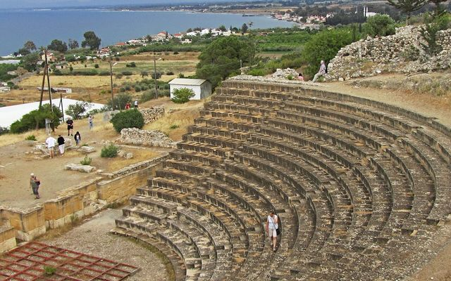
موقع سولي الأثريليفكه (ليفكا) · موقع أثري كنيسة القديس أنطونيوس البادويإسطنبول · مبنى ديني
كنيسة القديس أنطونيوس البادويإسطنبول · مبنى ديني دير القديس برناباغازي ماغوسا (فاماغوستا) · مبنى ديني
دير القديس برناباغازي ماغوسا (فاماغوستا) · مبنى ديني قلعة القديس هيلاريونغيرنه (كيرينيا) · قلعة ومبنى تاريخي
قلعة القديس هيلاريونغيرنه (كيرينيا) · قلعة ومبنى تاريخي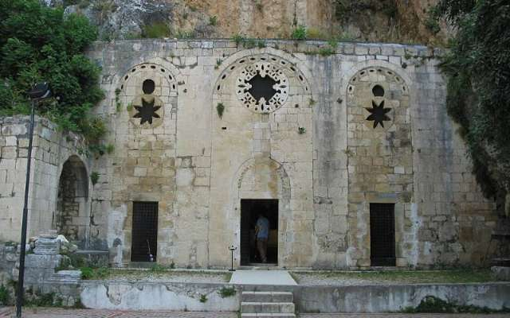
متحف القديس بطرس التذكاريهاتاي · متحف دير القديس سمعانهاتاي · مبنى ديني
دير القديس سمعانهاتاي · مبنى ديني موقع ستراتونيكيا الأثريموغلا · موقع أثري
موقع ستراتونيكيا الأثريموغلا · موقع أثري جامع السلطان أحمد (الجامع الأزرق)إسطنبول · مبنى ديني
جامع السلطان أحمد (الجامع الأزرق)إسطنبول · مبنى ديني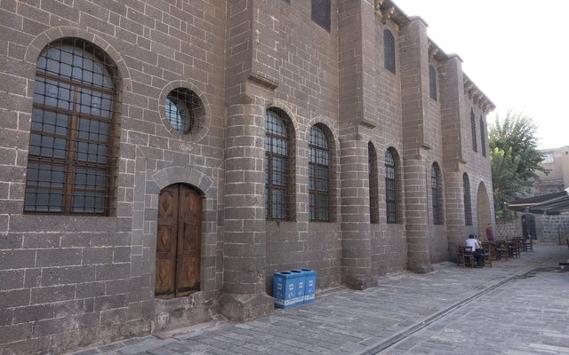
كنيسة سورب كيراكوس الأرمنيةديار بكر · مبنى ديني متحف أرطغرل غازي في سوغوتبيله جك · متحف
متحف أرطغرل غازي في سوغوتبيله جك · متحف جامع السليمانيةإسطنبول · مبنى ديني
جامع السليمانيةإسطنبول · مبنى ديني دير سوميلاطرابزون · مبنى دينيمتحف تاكسيارخيس التذكاريباليكسير · متحف
دير سوميلاطرابزون · مبنى دينيمتحف تاكسيارخيس التذكاريباليكسير · متحف سجن سينوب التاريخيسينوب · قلعة ومبنى تاريخي
سجن سينوب التاريخيسينوب · قلعة ومبنى تاريخي متحف القديس بولس التذكاري في طرسوسمرسين · متحف
متحف القديس بولس التذكاري في طرسوسمرسين · متحف بئر القديس بولس في طرسوسمرسين · مبنى ديني
بئر القديس بولس في طرسوسمرسين · مبنى ديني مدينة تاتلارين تحت الأرضنوشهر · مدينة تحت الأرضبيت أتاتورك المتحف في مراتلي (تكيرداغ)تكيرداغ · متحفمتحف تكيرداغتكيرداغ · متحف
مدينة تاتلارين تحت الأرضنوشهر · مدينة تحت الأرضبيت أتاتورك المتحف في مراتلي (تكيرداغ)تكيرداغ · متحفمتحف تكيرداغتكيرداغ · متحف موقع تيوس الأثريإزمير · موقع أثري
موقع تيوس الأثريإزمير · موقع أثري موقع ترميسوس الأثريأنطاليا · موقع أثريمتحف تيرهإزمير · متحفبيت أتاتورك والمتحف الإثنوغرافي في توقاتتوقات · متحف
موقع ترميسوس الأثريأنطاليا · موقع أثريمتحف تيرهإزمير · متحفبيت أتاتورك والمتحف الإثنوغرافي في توقاتتوقات · متحف متحف توقاتتوقات · متحف
متحف توقاتتوقات · متحف قصر طوب قابيإسطنبول · قلعة ومبنى تاريخي
قصر طوب قابيإسطنبول · قلعة ومبنى تاريخي متحف طرابزون (قصر كوستاكي)طرابزون · متحف
متحف طرابزون (قصر كوستاكي)طرابزون · متحف متحف طروادةجناق قلعة · متحف
متحف طروادةجناق قلعة · متحف متحف تونجليتونجلي · متحف
متحف تونجليتونجلي · متحف متحف الآثار التركية والإسلاميةإسطنبول · متحفمتحف الآثار التركية والإسلامية في أدرنةأدرنة · متحف
متحف الآثار التركية والإسلاميةإسطنبول · متحفمتحف الآثار التركية والإسلامية في أدرنةأدرنة · متحف متحف الآثار التركية الإسلامية والإثنوغرافياأرضروم · متحفمتحف أولوبورلوإسبرطة · متحف
متحف الآثار التركية الإسلامية والإثنوغرافياأرضروم · متحفمتحف أولوبورلوإسبرطة · متحف موقع أوزونجه بورج الأثريمرسين · موقع أثريمتحف أوشاكعشاق · متحف
موقع أوزونجه بورج الأثريمرسين · موقع أثريمتحف أوشاكعشاق · متحف قلعة وانوان · قلعة ومبنى تاريخي
قلعة وانوان · قلعة ومبنى تاريخي متحف وانوان · متحف
متحف وانوان · متحف قصر فونيليفكه (ليفكا) · موقع أثري
قصر فونيليفكه (ليفكا) · موقع أثري متحف يالواجإسبرطة · متحف
متحف يالواجإسبرطة · متحف متحف بيت شماكي في يني شهربورصة · متحف
متحف بيت شماكي في يني شهربورصة · متحف صهريج البازيليك (يرَبطان)إسطنبول · قلعة ومبنى تاريخي
صهريج البازيليك (يرَبطان)إسطنبول · قلعة ومبنى تاريخي موقع يسمك الأثريغازي عنتاب · موقع أثري
موقع يسمك الأثريغازي عنتاب · موقع أثري موقع وادي سوغانلي في يشيل حصارقيصري · موقع أثري
موقع وادي سوغانلي في يشيل حصارقيصري · موقع أثري متحف يوزغاتيوزغات · متحف
متحف يوزغاتيوزغات · متحف متحف بيت يوروك علي أفهآيدن · متحف
متحف بيت يوروك علي أفهآيدن · متحف متحف زكي مورين للفنونموغلا · متحف
متحف زكي مورين للفنونموغلا · متحف متحف زيوغما للفسيفساءغازي عنتاب · متحف
متحف زيوغما للفسيفساءغازي عنتاب · متحف موقع زيوغما الأثريغازي عنتاب · موقع أثري
موقع زيوغما الأثريغازي عنتاب · موقع أثري متحف ضياء كوك ألبديار بكر · متحفمركز التعريف بملحمة جناق قلعةجناق قلعة · متحفساحة إعادة تمثيل الهلال الأحمر في جناق قلعةجناق قلعة · متحف
متحف ضياء كوك ألبديار بكر · متحفمركز التعريف بملحمة جناق قلعةجناق قلعة · متحفساحة إعادة تمثيل الهلال الأحمر في جناق قلعةجناق قلعة · متحف متحف جانقريجانقري · متحف
متحف جانقريجانقري · متحف قلعة تشاوش تبهوان · قلعة ومبنى تاريخيموقع تشفليك الأثريهاتاي · موقع أثري
قلعة تشاوش تبهوان · قلعة ومبنى تاريخيموقع تشفليك الأثريهاتاي · موقع أثري متحف تشيشمهإزمير · متحف
متحف تشيشمهإزمير · متحف متحف البلاط في كوتاهيةكوتاهية · متحف
متحف البلاط في كوتاهيةكوتاهية · متحف متحف جورومجوروم · متحفمتحف أوديمشإزمير · متحف
متحف جورومجوروم · متحفمتحف أوديمشإزمير · متحف مدينة أوزكوناك تحت الأرضنوشهر · مدينة تحت الأرضمتحف أورغوبنوشهر · متحف
مدينة أوزكوناك تحت الأرضنوشهر · مدينة تحت الأرضمتحف أورغوبنوشهر · متحف قصر إسحاق باشاآغري · قلعة ومبنى تاريخي
قصر إسحاق باشاآغري · قلعة ومبنى تاريخي متحف الأيقونات في إسكلهإسكله (تريكومو) · متحف
متحف الأيقونات في إسكلهإسكله (تريكومو) · متحف متحف تاريخ العلوم والتكنولوجيا في الإسلامإسطنبول · متحف
متحف تاريخ العلوم والتكنولوجيا في الإسلامإسطنبول · متحف متاحف إسطنبول الأثريةإسطنبول · متحف
متاحف إسطنبول الأثريةإسطنبول · متحف برج غلطةإسطنبول · قلعة ومبنى تاريخيمتحف مطار إسطنبولإسطنبول · متحف
برج غلطةإسطنبول · قلعة ومبنى تاريخيمتحف مطار إسطنبولإسطنبول · متحف متحف إسطنبول للفن الحديثإسطنبول · متحف
متحف إسطنبول للفن الحديثإسطنبول · متحف متحف إزمير الأثريإزمير · متحفمتحف أتاتورك في إزميرإزمير · متحف
متحف إزمير الأثريإزمير · متحفمتحف أتاتورك في إزميرإزمير · متحف مصنع الثقافة والفن في إزميرإزمير · متحفمتحف الرسم والنحت في إزميرإزمير · متحف
مصنع الثقافة والفن في إزميرإزمير · متحفمتحف الرسم والنحت في إزميرإزمير · متحف متحف إزنيكبورصة · متحفمتحف شانلي أورفا الأثريشانلي أورفا · متحف
متحف إزنيكبورصة · متحفمتحف شانلي أورفا الأثريشانلي أورفا · متحف قلعة شانلي أورفاشانلي أورفا · قلعة ومبنى تاريخي
قلعة شانلي أورفاشانلي أورفا · قلعة ومبنى تاريخي